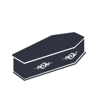
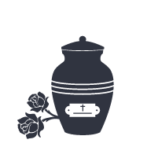

Ladies and gentlemen! We are deeply saddened by your loss and express our condolences.
funeral House
Well found on the website of the largest office in Chisinau specialized in providing funeral services and organizing funeral ceremonies. Over the past 20 years, our employees do their job with great care and respect and help organize funeral ceremonies of any level. We understand how difficult it is for anyone to focus on this moment of mourning, so we ensure the highest level of service and take on the most difficult aspects of preparing for the ceremony.
The Moldovan Funeral Services Office assumes any responsibility:
- organization and management of the funeral ceremony;
- solving medical, legal and religious questions;
- transporting the deceased to the morgue and to the burial place;
- incineration of the deceased and preparation of documents for receiving the ashes.
In addition, you can order from us:
- Porters' services;
- Singing in the house of the deceased, in the church or in the cemetery;
- A professional orchestra;
- Manufacture and installation of monuments;
- Coffins of any model and size.
The main purpose of all organizations working in this delicate field of providing funeral services is to ensure a decent attitude towards the deceased. The funeral ceremony must be performed according to the funeral rites of the different denominations. Therefore, if you want the ceremony to take place at the highest level, you do not have to worry about respecting traditions, call on the services of one of the most professional funeral services offices in Moldova .
On our page you can find detailed information about the activity of our office, you can get acquainted with the list of services, visit the photo gallery and, if necessary, you can receive a consultation by phone.
Organizing funeral ceremonies
Transport services
Wooden coffins

Coffins lined with fabric
CROSSES
Wreaths of flowers in the assortment
Orchestrate
Porter services
Offering the songs at home, at church or in the cemetery

Incineration

Medicinal services
The funeral home offers the full range of services for organizing funeral ceremonies. By entrusting us with the solution of this delicate question, you can be sure that all your wishes will be respected. Our company has all types of specialized transport and VIP-limousines. We can solve any question regarding the organization of funeral ceremonies and the provision of other services, as well as regarding the transportation of the body of the deceased from the CIS countries to the Republic of Moldova.
Contact:
Stefan cel Mare si Sfant Boulevard 67, Chișinău
Stefan cel Mare si Sfant Boulevard 67, Chișinău